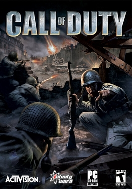

Home Page Meet the Team Game Overview Teams & Players Events Careers in E-Sports
E-Sports are competitive multiplayer video games played electronically on various platforms, such as game systems
(e.g., PlayStation, Xbox, Nintendo Switch), computers (e.g., PCs), or mobile devices
(e.g., phones, tablets).
These games attract players from around the world, ranging from casual gamers to professional athletes who compete in organized tournaments with large prize pools.
Popular E-Sports titles include League of Legends, Call of Duty, Fortnite, and Valorant, each with its own dedicated community and professional scene.
The E-Sports industry has grown exponentially, with live-streaming platforms like Twitch and YouTube Gaming enabling millions of fans to watch matches in real-time.
As of 2024, global E-Sports revenue has exceeded $1.5 billion, with significant contributions from sponsorships, media rights, and merchandise sales.
Universities and colleges are also recognizing E-Sports, offering scholarships and dedicated programs for aspiring players and industry professionals.

First-person shooter
Release Date: October 29, 2003
Owned by Microsoft
Developed by Infinity Ward and published by Activision, Call of Duty was initially set during World War II, offering a cinematic and immersive experience.
The franchise has since evolved to cover modern warfare, futuristic combat, and battle royale modes, solidifying its place as one of the best-selling video game series of all time.
As of 2024, Call of Duty includes over 20 titles across various platforms, attracting millions of players worldwide.
Call of Duty emphasizes precise shooting mechanics, fluid movement, and tactical decision-making. Players must balance aggression with strategy to outmaneuver opponents.
The Call of Duty League (CDL) features a structured seasonal format, including regional qualifiers, major tournaments, and a championship event. Teams compete for points to rank among the best.
Top teams include OpTic Texas, Atlanta FaZe, and Toronto Ultra. View live rankings and schedules for the latest updates.
Competitive maps like Raid, Nuketown, and Checkmate offer unique layouts for different game modes:
Mastering map callouts and positioning is critical for success. Explore pro tips and strategies.
Optimal settings include:
Popular loadouts include: